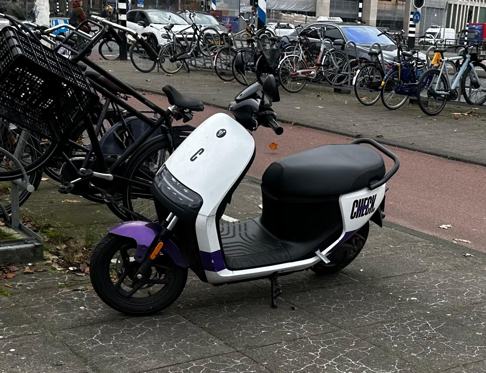
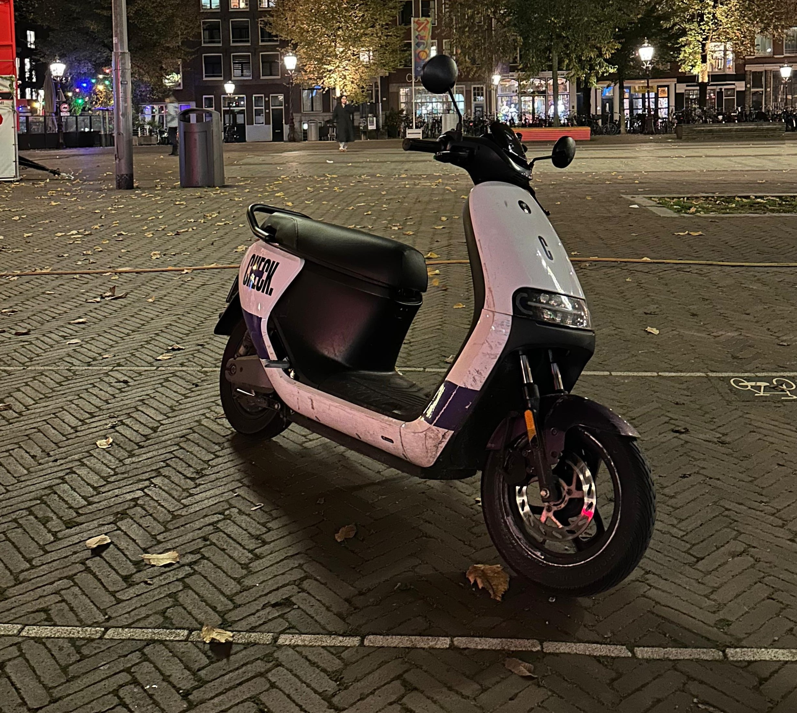
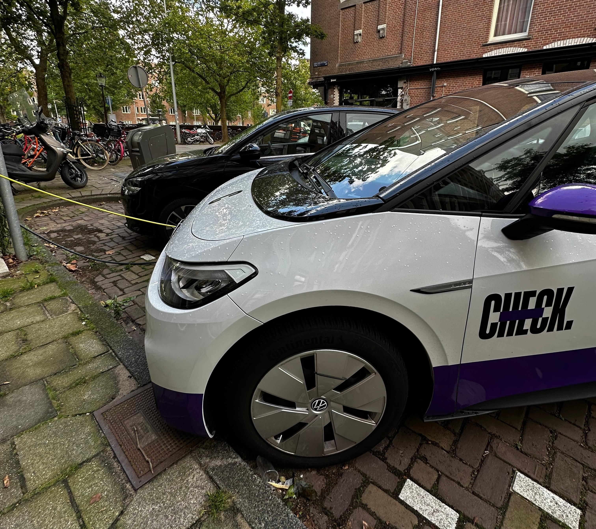

Een Scooter voor Iedereen
Hoe Groot is de Vloot van Check?
Check beschikt over een uitgebreide vloot van elektrische scooters, verspreid over meerdere steden. Dit betekent dat er altijd een scooter in de buurt is, klaar om je snel en milieuvriendelijk op weg te helpen!


Niet Alleen Scooters, Maar Ook Auto's
Check beschikt niet alleen over scooters, maar ook over auto's. In de app kun je namelijk ook deelauto's vinden en heel makkelijk unlocken, netzoals de scooters. Je kan passes kopen, waardoor je nog voordeliger uitkomt! Je kan kiezen uit Volkswagen ID.3 of Opel Corsa-e.